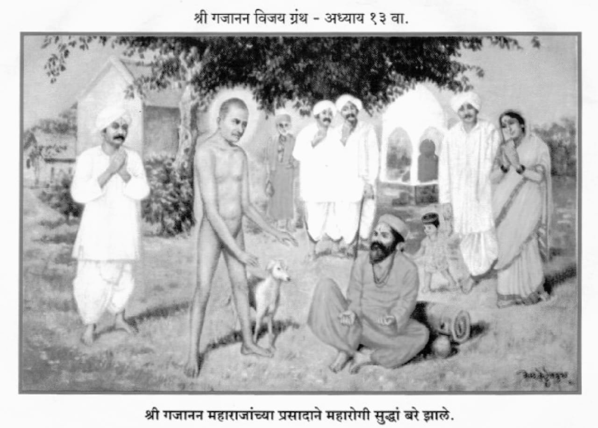

॥ अध्याय १३ ॥

।।श्रीगणेशाय नमः।।
हे संतवरदा श्रीधरा ।
हे दयेच्या सागरा ।
हे गोपगोपीप्रियकरा ।
तमालनीळा पाव हरी ।।१।।
तुझें ईशत्व पाहण्याकरितां।
जेंव्हां झाला विधाता ।
गाई वासरें चोरितां ।
यमुनातटीं गोकुळांत ।।२।।
तेव्हां तूं निजलीलेंकरून ।
गाई वासरें होऊन।
ब्रह्मदेवाकारण।
आपलें ईशत्व दाविले ।।३।।
दुष्ट ऐशा कालियाला।
यमुनेमाजी तुडवून भला।
रमणकद्वीपा धाडिला।
गोप निर्भय करण्यास ।।४।।
तेवीं माझ्या दुर्दैवा ।
तुडवुनीया वासुदेवा।
दासगणू हा करावा ।
निर्भय सर्व बाजूंनी ।।५।।
मी अजाण भक्त तुझा हरी।
परी देवा कृपा करी।
मी आहे अनधिकारी ।
योग्य न तुझ्या कृपेस ।।६।।
ऐसें जरी आहे सत्य ।
परी नको पाहूंस अंत ।
माझी चिंता वार त्वरित।
आपुल्या कृपाकटाक्षें ।।७।।
आतां श्रोते सावधान ।
बंकट, हरी, लक्ष्मण।
विठू जगदेवादि मिळून।
गेले वर्गणी जमवावया ।।८।।
भाविकांनीं वर्गणी दिली।
कुत्सितांनीं कुटाळी केली ।
वर्गणीची कां हो पडली।
जरूर तुमच्या साधूस्तव ।।९।।
गजानन म्हणतां महासंत।
जें न घडे तें घडवीत ।
मग त्यांच्या मठाप्रत ।
वर्गणी ही कशाला ? ।।१०।।
कुबेर त्यांचा भांडारी ।
मग कशास फिरता दारोदारी ?।
चिठ्ठी कुबेराच्यावरी ।
करा म्हणजे काम झालें ।।११।।
ऐसें ऐकतां भाषण ।
जगदेव बोलला हांसोन ।
या भिक्षेचें कारण ।
आहे तुमच्या बऱ्यासाठीं ।।१२।।
श्रीगजाननासाठीं।
नको बांधणें मठमठी।
ह्या अवघ्या आटाआटी।
तुमचें कल्याण व्हावयास ।।१३।।
स्वामी गजाननाचा।
त्रैलोक्य हाचि मठ साचा ।
अवघीं वनें हा बगीचा ।
पलंग ज्यांचा मेदिनी ।।१४।।
अष्टसिद्धी दासीपरी ।
राबताती ज्याच्या घरीं।
तो न तुमची पर्वा करी।
त्याचें वैभव निराळें ।।१५।।
सविता सूर्यनारायण।
त्यासी दीप कोठून।
प्रकाश देऊ शकेल जाण ।
प्रतिकार करण्या तमाचा ।।१६।।
तो मुळींच प्रकाशमयीं ।
त्याला दीपाचें काज नाहीं ।
हलकारा तो कोठून होई।
सार्वभौमा भूषवितां ? ।।१७।।
इच्छा ऐहिक वैभवाची।
असते मानवांप्रति साची ।
ती आहे व्हावयाची।
पूर्ण या पुण्यकृत्यानें ।।१८।।
रोग बरा करण्या भली।
औषधाची योजना केली ।
प्राणासाठीं नसे झाली ।
ती हे ध्यानी धरा हो ।।१९।।
रोग भय शरीरास।
नाहीं मुळींच प्राणास।
जन्ममरण हेंही त्यास ।
नाही मुळी राहिलें ।।२०।।
तैसी तुमची सुसंपन्नता ।
रक्षण व्हाया सर्वथा।
पुण्यरूप औषधी आतां।
मिळणें भाग आहे की ।।२१।।
संपन्नता हें शरीर।
रोग त्याचे अनाचार ।
त्याचा नाश होणार।
या पुण्यरूप औषधीनें ।।२२।।
म्हणून पुण्यसंचय करा।
कुतर्क ना चित्तीं धरा।
पुण्य मेदिनींमाजीं पेरा।
करा आपुल्या संपत्तीचा ।।२३।।
बीज पेरिता खडकावर।
तें वायां जातें साचार।
त्यास कधीं ना येणार।
मोड हें ध्यानीं धरावें ।।२४।।
अनाचार दुर्वासना ।
हे खडक असती जाणा।
तेथें टाकिल्यावरी दाणा।
ते किडे पांखरें भक्षिती ।।२५।।
संतसेवेसमान ।
कोणतें नाहीं पुण्य आन ।
स्वामी सांप्रत गजानन।
मुगुटमणी संतांचें ।।२६।।
संतकार्यास कांहीं देता ।
अगणित होतें सर्वथा ।
एक दाणा टाकितां।
मेदिनीमाजी कणीस होतें ।।२७।।
त्या कणसास दाणे येती ।
एकाचेच बहुत होती ।
तीच पुण्याची आहे स्थिती।
हें बुध हो विसरूं नका ।।२८।।
ऐसें बोलतां साचार ।
कुटाळ झाले निरुत्तर ।
खरें तत्त्व असल्यावर।
कुंठित गती तर्काची ।।२९।।
नेता असल्या वजनदार ।
वर्गणी ती जमे फार।
क्षुल्लकाच्यानें न होणार ।
कार्य कधीं वर्गणीचें ।।३०।।
असो मिळाल्या जागेवरी ।
कोट बांधिला सत्वरीं ।
झटूं लागलें गांवकरी ।
मग वाण कशाची? ।।३१।।
बांधकाम कोटाचें।
चालतां शेगांवीं साचें ।
दगड चुना रेतीचें ।
सामान गाड्या वाहती ।।३२।।
त्या वेळीं समर्थ स्वारी ।
होती जुन्या मठावरी।
त्यांनी विचार अंतरीं ।
ऐशा रीती केला हो ।।३३।।
आपण तेथें बसल्याविणें ।
काम न चालें झपाट्यानें।
म्हणून कौतुक समर्थानें ।
केले कसें ते परियेसा ।।३४।।
एका रेतीच्या गाडीवरी ।
समर्थांची बसली स्वारी।
तो गाडीवान झाला दुरी।
महार होता म्हणून ।।३५।।
तयीं महाराज वदले तयास ।
कां रे खालीं उतरलास?।
आम्हां परमहंसांस ।
विटाळाची बाधा नसे ।।३६।।
महार बोले त्यावरी ।
महाराज तुमच्या शेजारीं ।
मी न बसे गाडीवरी।
तें आम्हां उचित नसे ।।३७।।
मारुती रामरूप झाला ।
परी रामासन्निध नाहीं बसला ।
तो उभाच पहा राहिला।
कर जोडुनी रामापुढें ।।३८।।
बरें बापा तुझी मर्जी ।
त्यास हरकत नाहीं माझी ।
बैलांनो, नीट चला आजी।
गाडीवाल्यामागून ।।३९।।
बैल तैसें वागले ।
नाही कशास बुजले ।
गाडीवाल्यावांचून आलें।
नीट सांकेतिक स्थलास ।।४०।।
समर्थ खालीं उतरले ।
मध्यभागीं येऊन बसले।
तेथेंच हल्लीं काम झालें।
त्यांच्या भव्य समाधीचें ।।४१।।
ही जागा शेगांवांत ।
आहे दोन नंबरांत ।
त्रेचाळीस पंचेचाळीस ।
सातशें सर्व्हे नंबराच्या ।।४२।।
महाराज बसले ज्या ठिकाणीं ।
तीच यावी मेदिनी।
मध्यभागा म्हणूनी ।
हें करणें भाग पडलें ।।४३।।
त्या दोन नंबरांतून ।
जागा थोडथोडी घेऊन ।
साधिला तो मध्य जाण ।
ऐसें चतुर कारभारी ।।४४।।
एक एकराचा हुकूम झाला ।
परी बांधकामाच्या वेळेला ।
समाधिमध्य साधण्याला।
जागा थोडी पडली कमी ।।४५।।
त्यासाठी म्हणून।
अकरा गुंठे जास्त जाण ।
जमीन ती घेऊन ।
बांधकाम चालविलें ।।४६।।
पुढाऱ्यांच्या होतें मनीं।
वचन दिलें अधिकाऱ्यांनी ।
आणिक एक एकर तुम्हांलागुनी।
काम पाहून जागा देऊं ।।४७।।
यास्तव केलें धाडस।
अकरा गुंठे घेण्यास ।
परी तें गेलें विकोपास ।
एका दुष्टाच्या बातमीमुळें ।।४८।।
यामुळें पुढारी।
थोडे घाबरले अंतरीं ।
त्यांत जो पाटील होता हरी ।
तो बोलला समर्था ।।४९।।
अकरा गुंठे जागेचा।
तपास करावया साचा ।
एक जोशी नांवाचा।
आला असे अधिकारी ।।५०।।
हांसत हांसत पाटलाला।
समर्थानें शब्द दिला।
जागेबद्दल जो कां झाला।
दंड, तुम्हा तो माफ होईल ।।५१।।
त्या अधिकारी जोशाप्रती।
समर्थानें दिली स्फूर्ती।
चाललेल्या प्रकरणावरती।
शेरा त्यांनी मारिला ।।५२।।
कीं हा दंड झालेला।
विनाकारण आहे भला।
दंड ! गजानन संस्थेला।
परत द्यावा म्हणून ।।५३।।
मी करून आलों चौकशी ।
जाऊन त्या शेगांवासी ।
या घडलेल्या प्रकारासी।
दंड होणें उचित नाहीं ।।५४।।
म्हणून तो माफ केला।
ऐसा हुकूम जेव्हां आला।
तैं हरी पाटलाला।
आनंद झाला विशेष ।।५५।।
तो म्हणे समर्थांचे ।
वाक्य ना खोटें व्हावयाचें।
मजवरी किटाळ महाराचें।
येऊन गेलें नुकतें एक ।।५६।।
त्या वेळीं महाराजांनीं ।
भिऊं नकोस म्हणोनी ।
तुझ्या एकाही केसालागुनी।
धक्का न त्याचा बसेल ।।५७।।
तेंच खरें अखेर।
घडून आलें साचार।
तैसाच हाही प्रकार।
आज दिनीं झालासे ।।५८।।
समर्थवाक्य खोटें झालें।
ऐसें कोणी न कधी ऐकिलें।
असो शेगांवाचे लागले।
लोक भजनी स्वामींच्या ।।५९।।
आतां नव्या जागेंत आल्यावर ।
जें कांहीं घडलें प्रकार ।
म्हणजे समर्थांचे चमत्कार ।
ते आतां वर्णितो ।।६०।।
मेहेकरच्या सान्निध्याला।
सवडद नामें ग्राम भला ।
त्या गांवीचा एक आला ।
गंगाभारती गोसावी ।।६१।।
यास होता महारोग ।
कुजून गेलें अवघें अंग ।
उरली न पडल्यावांचून भेग।
जागा दोन्ही पायांला ।।६२।।
करपद बोटें झडून गेली ।
तनुप्रती चढली लाली ।
कानाच्या सुजल्या पाळी ।
कंडू सुटला तनूतें ।।६३।।
म्हणून गंगाभारती।
त्या महारोगा त्रासला अती।
समर्थांची ऐकोन कीर्ति।
शेगांवासी पातला ।।६४।।
श्रोते त्या गोसाव्याप्रत।
लोक आडवूं लागले बहुत ।
तुला रक्तपिती आहे सत्य।
तूं न जावें दर्शना ।।६५।।
महाराज दिसतील ऐशा ठायीं।
उभा राहून दर्शन घेई।
कधींही ना जवळ जाई।
त्यांचे चरण धरावया ।।६६।।
हा स्पर्शजन्य रोग फार।
म्हणून वैद्य डॉक्टर।
सांगती याचा विचार।
तूं आपुल्या मनीं करी ।।६७।।
परी एके दिनी गंगाभारती ।
चुकवून अवघ्या लोकांप्रती।
येता झाला सत्वर गती।
प्रत्यक्ष दर्शन घ्यावया ।।६८।।
डोई ठेवितां पायावर ।
समर्थांनी चापट थोर ।
मारिली त्याच्या डोक्यावर ।
अति जोरानें विबुध हो ।।६९।।
म्हणून तो उभा ठेला।
समर्थांस न्याहाळू लागला।
स्वामींनी त्याचे थोबाडाला।
दोन्ही करें ताडिलें ।।७०।।
फडाफड मारिल्या मुखांत।
आणिक वरती एक लाथ।
खाकरोनी बेडक्याप्रत ।
थुंकले त्याच्या तनूवरी ।।७१।।
तोच त्याने मानिला।
समर्थांचा प्रसाद भला।
बेडका होता जो कां पडला ।
तयाचिया अंगावर ।।७२।।
तो त्याने घेऊन करी ।
चोळून अवघ्या शरीरी।
लाविता झाला मलमापरी।
आपुल्या सर्व अंगास ।।७३।।
तो प्रकार पाहतां ।
एक कुटाळ तेथे होता।
तो गोसाव्यासी बोलतां।
झाला पाहा येणें रीति ।।७४।।
आधीच शरीर नासलें।
तुझें आहे बापा भलें।
त्यावरी यांनीं टाकिले।
या अमंगळ बेडक्यातें ।।७५।।
तो तूं प्रसाद मानिला ।
अवघ्या अंगातें चोळिला।
जा लावून साबणाला।
धुवून टाकी सत्वर ।।७६।।
हे ऐसे वेडे पीर ।
विचरूं लागतां भूमीवर।
त्यांशीं अंधश्रद्धेचें नर ।
साधू ऐसे मानिती ! ।।७७।।
त्याचा परिणाम ऐसा होतो ।
अविधि कृत्यांस ऊत येतो ।
तो येतां सहज जातो ।
समाज तो रसातळां ।।७८।।
यासी तुझेंच उदाहरण।
तूं औषध घेण्याचे सोडून।
आलास की रे धांवून ।
या वेड्यापिशापाशीं ।।७९।।
गोसावी तें ऐकतां ।
हसूं लागला सर्वथा ।
म्हणे तुम्ही येथेंच चुकतां।
याचा करा विचार ।।८०।।
अमंगळ साधूपासी।
कांहीं न राहातें निश्चयेसी ।
कस्तुरीच्या पोटाशी।
दुर्गंधी ना वसे कदा ।।८१।।
तुम्हां दिसला बेडका।
तो हा प्रत्यक्ष मलम देखा।
कस्तुरीच्या सारखा।
सुवास येतो यालागीं ।।८२।।
तुम्हां संशय असल्यास।
पाहा माझ्या अंगास।
हात लावूनिया खास।
म्हणजे कळून येईल कीं ।।८३।।
त्यांत थुंक्याचें नांव नाहीं ।
अवघी औषधी आहे पाही ।
मी इतुका वेडा नाहीं ।
बेडक्यास मलम मानणारा ।।८४।।
तुझा त्यासी संबंध नव्हतां।
म्हणून बेडका दिसला तत्त्वतां।
समर्थांची योग्यता।
त्वां न मुळीं जाणिली ।।८५।।
त्याचें पाहण्या प्रत्यंतर ।
चाल जाऊं एकवार।
स्नान केलेल्या जागेवर।
वेळ आतां करूं नको ।।८६।।
समर्थ स्नान प्रतिदिवशीं।
करतील ज्या जागेसी।
तेथल्या ओल्या मातीसी।
मी लावितों निजांगा ।।८७।।
ऐसा संवाद तेथे झाला ।
दोघे गेले स्नानस्थला ।
तो कुटाळासी आला।
अनुभव गोसाव्यापरीच ।।८८।।
मृत्तिका स्नानस्थलाची ।
दोघांनीही घेतली साची ।
तो गोसाव्याच्या हातीं ।
बैसली औषधी होऊन ।।८९।।
कुटाळाच्या हातांत।
ओलीच माती आली खचित् ।
दुर्गंधीही किंचित् ।
येत होती तियेला ।।९०।।
तो प्रकार पाहतांक्षणीं ।
कुटाळ घोटाळला मनीं।
कुत्सित कल्पना सोडूनी ।
शरण गेला समर्था ।।९१।।
असो कोणी गोसाव्यातें ।
जवळ बसू देत नव्हते।
हा दूर बसून भजनातें ।
करी स्वामीपुढें नित्य ।।९२।।
आवाज गंगाभारतीचा ।
पहाडी गोड मधुर साचा ।
अभ्यास होता गायनाचा।
त्या गंगाभारतीला ।।९३।।
ऐसें पंधरा दिवस गेले।
रोगाचें स्वरूप पालटलें ।
लालीनें तें सोडिलें ।
तयाचिया अंगाला ।।१४।।
चाफे झाले पूर्ववत्।
भेगा पदींच्या निमाल्या समस्त ।
दुर्गंधीचा मोडला त्वरित ।
ठाव त्याचा श्रोते हो ।।९५।।
गोसाव्याचें ऐकून भजन ।
होई संतुष्ट समर्थमन ।
प्रत्येक जिवाकारण ।
गायन हें आवडतें ।।९६।।
बायको गंगाभारतीची।
अनसूया नांवाची ।
ती शेगांवीं आलीं साची ।
न्याया निज पतीला ।।९७।।
संतोषभारती कुमार ।
होता तिच्या बरोबर।
येऊन पतीस जोडिले कर।
चला आतां गांवातें ।।९८।।
तुमची व्याधी बरी झाली।
ती मी दृष्टीं पाहिली ।
समर्थ साक्षात् चंद्रमौळी।
आहेत हेंच खरें असे ।।९९।।
मुलगा तेंच बोलला ।
म्हणे बापा गांवीं चला।
पुसून गजानन महाराजाला ।
येथें राहणें पुरें झालें ।।१००।।
गंगाभारती म्हणे त्यावर ।
मला नका जोडू कर।
आजपासून साचार।
मी तुमचा खचित नाहीं ।।१।।
ही अनाथांची माऊली ।
स्वामी गजानन येथें बसली।
त्यांनी माझी उतरविली ।
धुंदी चापट मारून ।।२।।
राख लाविली अंगाप्रत ।
आणि चित्त तुझें संसारात।
केलीस विटंबना बहुत।
या भगव्या वस्त्राची ।।३।।
ऐसें संकेतें बोलले ।
थापट्या मारून जागें केलें।
आतां डोळे उघडिलें।
संसाराचा संबंध नको ।।४।।
हे संतोषभारती कुमारा ।
तूं तुझ्या आईस नेई घरा ।
येथें नकोस राहूं जरा।
सवडद जवळ करावें ।।५।।
हिचें जीवमान जोंवरी।
तोंवरी हिची सेवा करी।
ही तुझी माय खरी।
हिला अंतर देऊं नको ।।६।।
मातोश्रींची करितां सेवा।
तो प्रिय होतो वासुदेवा।
पुंडलिकाचा ठेवावा।
इतिहास तो डोळ्यांपुढे ।।७।।
मी येता सवडदांत ।
पुन्हां रोग होईल पूर्ववत् ।
म्हणून त्या आग्रहांत ।
तुम्हीं न पडावे दोघांनी ।।८।।
आजवरी तुमचा होतो ।
आतां देवाकडे जातो ।
नरजन्माचा करून घेतों ।
कांहीं तरी उपयोग ।।९।।
हा वाया गेला खरा।
नराचा जन्म साजिरा ।
चुकेल चौऱ्याशींचा फेरा।
ऐसें साच सांगितलें ।।११०।।
समर्थकृपेनें निश्चिती।
झाली मला ही उपरती ।
या परमार्थखिरींत माती ।
टाकूं नका रे मोहाची ।।११।।
ऐसें सांगून कुटुंबाला।
मुलासह सवडदाला।
दिले धाडून राहिला।
आपण तसाच शेगांवी ।।१२।।
पदपदांतरें समर्थांचीं।
आवडीने म्हणावीं साची।
त्यास कला गायनाची।
येत होती विबुध हो ।।१३।।
प्रत्यहीं तो अस्तमाना ।
एकतारा घेऊन जाणा ।
समर्थांच्या सान्निधाना ।
बैसून भजन करीतसे ।।१४।।
ऐकून त्याचें भजन ।
इतरांचेही हर्षे मन ।
वस्तु अशीच आहे गान ।
रंजविणारी सर्वांते ।।१५।।
हा गंगाभारती बरा झाला ।
रोगाचा पत्ता मोडला।
मलकापुरास पुढें गेला।
गजाननाच्या आज्ञेनें ।।१६।।
असो एकदां पौषमासी ।
झ्यामसिंग आला शेगांवासी ।
बोलतां झाला समर्थांसी।
माझ्या गांवास चला हो ।।१७।।
मम भाच्याच्या गृहाला।
अडगांवीं नेण्याला ।
मी आलों होतों आपणाला।
तयीं आपुला करार ।।१८।।
ऐसा होता समर्था।
मी नाहीं येत आतां।
नको करूं आग्रह वृथा।
पुढें मागें येईन ।।१९।।
त्याला दिवस झालें बहुत।
आतां चला मुंडगांवांत ।
मी आहे आपुला भक्त।
माझी इच्छा पूर्ण करा ।।१२०।।
मुंडगांवांत माझे घरीं ।
कांहीं दिवस राहा तरी ।
मी अवघी करून तयारी।
न्याया आलो आपणां ।।२१।।
इ्यामसिंगा बरोबर ।
मुंडगांवी आले साधुवर ।
दर्शना लोटले नारीनर ।
तो न आनंद वर्णवे ।।२२।।
झ्यामसिंगानें भंडारा ।
घातिला असे थोर खरा ।
मुंडगांव झाले गोदातीरा ।
दुसरें कीं हो पैठण ।।२३।।
पैठणामाजी एकनाथ।
मुंडगांवीं गजानन संत।
भजनी दिंड्या अमित ।
आल्या भजन करावया ।।२४।।
आचारी लागले स्वैंपाका ।
अर्धा स्वैंपाक झाला निका।
तैं महाराज बोलले देखा।
ऐसे झ्यामसिंगासी ।।२५।।
झ्यामसिंगा, आज चतुर्दशी।
मुळींच आहे रिक्त तिथी।
भोजनाच्या पंक्ती ।
पौर्णिमेला होऊं दे ।।२६।।
झ्यामसिंग बोलला यावर।
स्वयंपाक झाला तयार ।
लोक जमले आहेत फार ।
आपला प्रसाद घ्यावया ।।२७।।
स्वामींनीं केले बोलणें।
तुझें व्यवहारदृष्टीनें।
योग्य परी हें न माने ।
त्या जगदीश्वराला ।।२८।।
झ्यामसिंगा ! हें अन्न ।
न येईल उपयोगाकारण।
तुम्हां प्रापंचिकालागून।
आपलेंच व्हावें वाटते ।।२९।।
पंक्ती बसल्या भोजना ।
तों एकाएकी आकाश जाणा।
भरून आलें गर्जना ।
होऊं लागली मेघांची ।।१३०।।
चमकें वीज माथ्यावरी।
झंझावात सुटला भारी।
कडकडा तीं कांतारीं।
लागलीं झाडें मोडावया ।।३१।।
घटकेंत पाणी पाणी झालें ।
अन्न अवघे वाया गेलें।
मग झ्यामसिंगानें विनविलें ।
महाराजांस येणें रीतीं ।।३२।।
आतां महाराज उद्यां तरी।
मुळी न व्हावें आजच्या परी।
हिरमुष्टी होऊन बसली खरी।
अवघी मंडळी गुरुराया ।।३३।।
निवारा या पर्जन्याला ।
हा नव्हे पावसाळा।
अगांतुक बेटा आला।
आमचा नाश करावया ।।३४।।
आतां पाऊस पडेल ।
तरी शेतीचें होईल ।
वाटोळें तें पाहा सकळ।
मग म्हणतील लोक ऐसें ।।३५।।
झ्यामसिंगे केलें पुण्य।
हा भंडारा घालून।
तें भोवलें आम्हा लागून।
वा खूप तन्हा पुण्याची ।।३६।।
तैं महाराज म्हणाले झ्यामसिंगा ! ।
ऐसा सचिंत होसी कां गा।
तुला न उद्यां देईल दगा।
हा पर्जन्य कधींही ।।३७।।
आत्तांच मी वारितो त्यासी।
ऐसें बोलोन आकाशासी ! पाहूं लागलें पुण्यराशी।
तों आभाळ फांकलें ।।३८।।
मेघ क्षणांत निघून गेले।
सर्व ठायीं ऊन पडलें।
हें एका क्षणांत झालें ।
अगाध सत्ता संतांची ।।३९।।
दुसरे दिवशी पौर्णिमेला ।
थोर भंडारा पुन्हां झाला।
तो नियम चालला ।
अजून त्या मुंडगांवी ।।१४०।।
इ्यामसिंगानेआपुली।
इस्टेट सर्व अर्पण केली ।
महाराजांचे चरणी भली।
त्या मुंडगांव ग्रामांत ।।४१।।
लोक त्या मुंडगांवात ।
समर्थांचे झाले भक्त।
पुंडलीक भोकरे म्हणूनी त्यांत ।
एक जवान पोऱ्या असे ।।४२।।
हा उकिरड्या नामक कुणब्याचा ।
पुत्र एकुलता एक साचा ।
भक्त झाला महाराजांचा ।
ऐन तारुण्यामाझारी ।।४३।।
हे उकीर्डा नाम वन्हाडांत।
पोर नसल्या वांचत ।
लोक नवसें ठेवितात ।
ऐसा प्रघात त्या प्रांती ।।४४।।
तें पेंटय्या तेलंगणांत।
केर पुंजा महाराष्ट्रांत।
तैसा उकीर्डा वन्हाडांत।
नांव ठेविती बालकाचें ।।४५।।
हा पुंडलीक वद्य पक्षासी।
करावया वारीसी।
येत नियमें शेगांवासी।
घ्याया दर्शन समर्थांचें ।।४६।।
जैसें कां तें वारकरी।
वद्य पक्षामाझारीं।
जाती इंद्रायणीचें तीरीं।
देहू आळंदी गांवाला ।।४७।।
तैसाच हा वन्हांडात।
वारी वद्य पक्षात ।
करी येऊन शेगांवात ।
परम भावभक्तीनें ।।४८।।
असो एकदां वन्हाडांत।
रोग ग्रंथिक सन्निपात ।
बळावला अत्यंत।
गांव बाहेर पडले कीं ।।४९।।
या तापांत ऐसें होतें।
प्रथमतां थंडी वाजते।
अंग ज्वरानें तप्त होतें।
डोळें होती लाल बहु ।।१५०।।
आणि कोठेतरी सांध्यावर ।
ग्रंथि उठें सत्वर ।
ती होता करी जोर ।
वात तिच्या मागूनी ।।५१।।
मग रोगी बरळतसे ।
शुद्धि न कांहीं राहतसे ।
तलखी अंगाची होत असे ।
बेशुद्ध होई क्षणाक्षणां ।।५२।।
पूर्वी हा रोग विपरीत।
नव्हतां भरतखंडांत।
त्याचा वास युरोपांत ।
होता मोठ्या प्रमाणी ।।५३।।
ती सांथ इकडे आली।
गांवोगांव पसरली ।
त्याच्या प्रतिकारा सोडून दिलीं।
लोकांनीं ती घरेंदारें ।।५४।।
त्या दुर्धर सांथीची स्वारी ।
आली पाहा मुंडगांवावरी ।
तो पुंडलीकाची आली वारी।
शेगांवास निघाला ।।५५।।
कसकस त्याला घरीच आली।
परी ती त्याने चोरिली ।
शेगांवाची वाट धरली।
आपुल्या पित्यासमवेत ।।५६।।
येतां पांच कोसांवर ।
शरीरासी भरला ज्वर।
एक पाऊल भूमीवर ।
तयाच्यानें टाकवेना ।।५७।।
गांठ उठली बगलेंत ।
हैराण झाला रस्त्यांत।
ऐसें पाहून पुसें तात ।
कां रे पुंडलीका ऐसें करिशी ? ।।५८।।
पुंडलीक म्हणे बापाला ।
बाबा मशीं ताप आला ।
गोळा एक कांखेला ।
उठला आहे येधवा ।।५९।।
शक्ति सारी क्षीण झाली ।
आतां मशीं न चालवें मुळीं।
काय करूं ही राहिलीं।
वारी हाय रे दुर्दैवा ।।१६०।।
हे स्वामी दयाघना ! ।
वारीस खंड पाडी ना ।
दाव तुझ्या दिव्य चरणा ।
भक्तवत्सला कृपानिधी ।।६१।।
वारी सांग झाल्यावर ।
मग येऊं दे खुशाल ज्वर ।
जरी सांडले शरीर ।
तरी न त्याची पर्वा मला ।।६२।।
माझा पुण्यठेवा हीच वारी ।
ती रक्षण आतां करी ।
ही साथ झाली वैरी।
नाश तिचा करावयातें ।।६३।।
शरीरसामर्थ्य जोंवर ।
परमार्थ घडे तोंवर।
बापही झाला चिंतातुर।
ती मुलाची पाहून स्थिती ।।६४।।
तोही रडू लागला ।
हा एकुलता एक पुत्र मला।
देवा न दिवा नेई भला।
हा माझ्या वंशाचा ।।६५।।
उकीर्डा म्हणे पुत्रास।
गाडीघोडे बसावयास ।
आणूं कां या समयास ।
तुला बाळा बसावया ।।६६।।
पुंडलीक वदे तयावरी ।
झाली पाहिजे पायींच वारी ।
उठत बसत कसें तरी।
जाऊं चला शेगांवा ।।६७।।
मध्येंच मृत्यु आल्यास ।
शव तरी ने शेगांवास।
नको करूं शोकास।
हेंच आतां सांगणें ।।६८।।
बसत उठत पुंडलीक आला।
अति कष्टे शेगांवाला।
पाहून स्वामी समर्थाला।
घातलें त्यानें दंडवत ।।६९।।
तो समर्थांनी माव केली ।
एका हातानें दाबिली।
कांख त्यांनीच आपुली।
अति जोर करोनिया ।।१७०।।
आणि केलें मधुरोत्तर ।
पुंडलीका ! तुझें गंडांतर ।
टळले आतां तिळभर।
चिंता त्याची करूं नको ।।७१।।
तैसे महाराज वदतां क्षणी ।
पुंडलीकाची गांठ जाणी।
गेली जागच्या जागी जिरोनी ।
ताप तोही उतरला ।।७२।।
कंप अशक्ततेनें।
राहिला देहाकारणें ।
करी पुंडलीकाच्या मातेनें ।
आणिला नैवेद्य वाढून ।।७३।।
घांस त्या नैवेद्याचे।
समर्थे घेतां दोन साचे।
कांपरें तें पुंडलीकाचें।
गेले बंद होवोनिया ।।७४।।
पुंडलीक झाला पूर्ववत्।
अशक्तता राहिली किंचित् ।
हे गुरुभक्तीचें फळ सत्य।
उघडा डोळे अंधांनो ! ।।७५।।
गुरू योग्य असल्यावरी ।
वायां न जाई सेवा खरी।
कामधेनु असल्या घरीं।
कां न इच्छा पुरतील? ।।७६।।
सांग करून वारीला।
पुंडलीक गेला मुंडगांवाला।
हें जो चरित्र वाची भला।
त्याचें टळेंल गंडांतर ।।७७।।
संतचरित्र ना कहाणी ।
अनुभवाची खाण जाणी ।
मात्र अविश्वास मनीं।
संतकथेचा न यावा हो ।।७८।।
श्रीदासगणूविरचित ।
हा श्रीगजानन विजय नामें ग्रंथ।
सुखद होवो भाविकांप्रत।
हेंच देवा मागणें ।।१७९।।
शुभं भवतु ।।
श्रीहरिहरार्पणमस्तु ।।
।।इति श्रीगजानन विजय ग्रंथस्य त्रयोदशोऽध्यायः समाप्तः।।